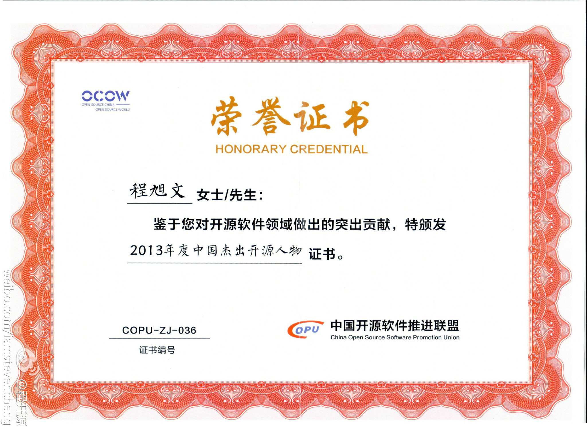

看来是真高兴~~~//@程开源: 年轻的朋友们,今天来相会.荡起小船儿,暖风轻轻吹. 花儿香,鸟儿鸣,春光惹人醉.欢歌笑语绕着彩云飞. 啊,亲爱的朋友们,美妙的春光属于谁? 属于我,属于你, 属于我们棱镜时代的新一辈~~~~~~ //@phreaker: 恭喜恭喜！期待老程在棱镜带来的新时代，做出更大的贡献！@程开源:#20年来的第一次获奖# 得瑟一下，2013年6月18日，偶在北京举行的第八届 “开源中国，开源世界”高峰论坛上获得了 #2013年度中国杰出开源人物# 奖，哥好歹也是一人物啦~~~ 感谢同事们、朋友们的支持！ 